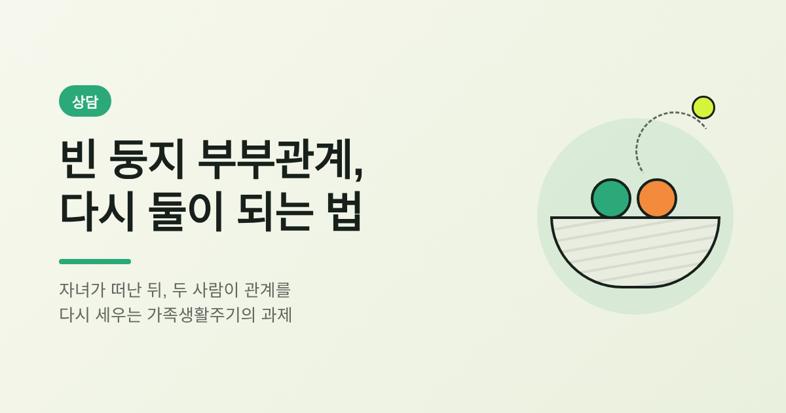
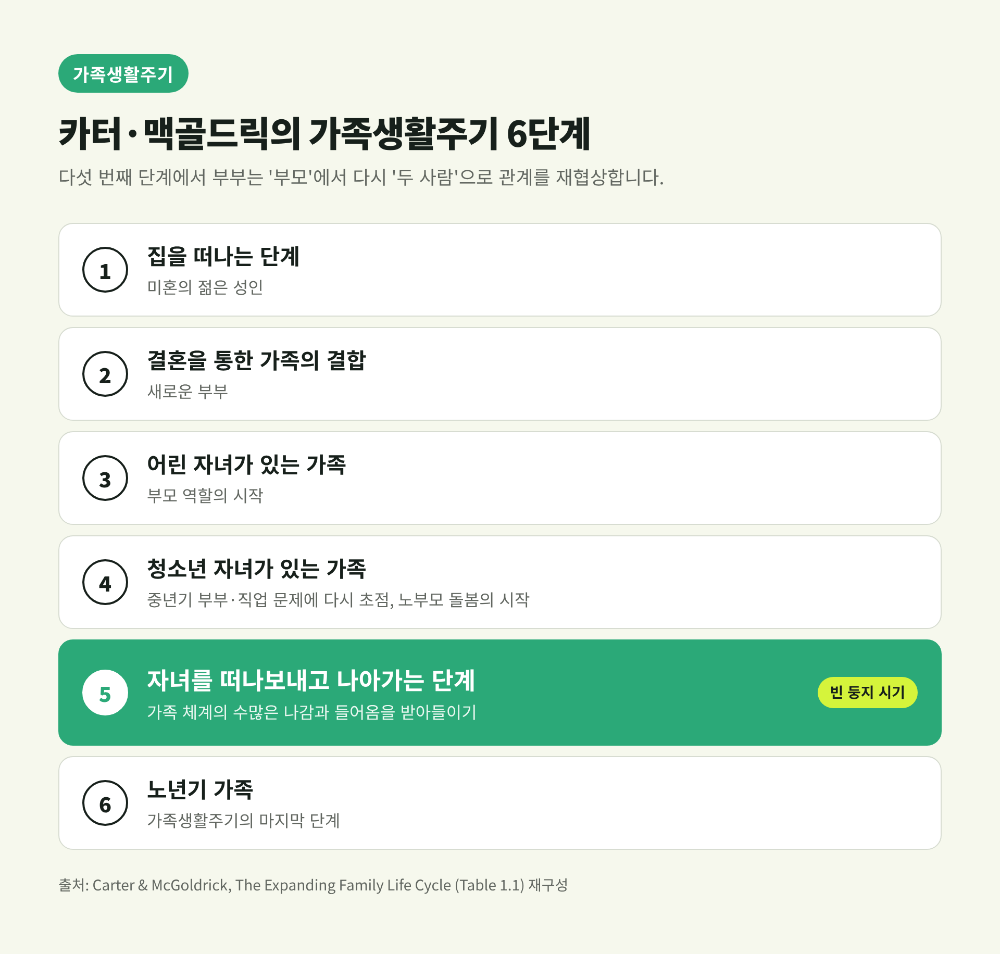
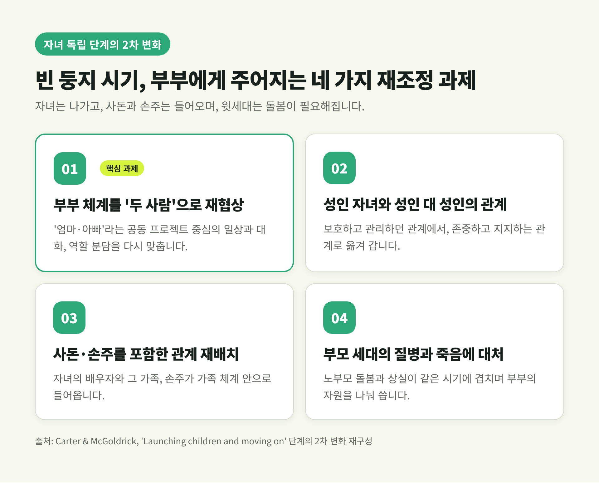
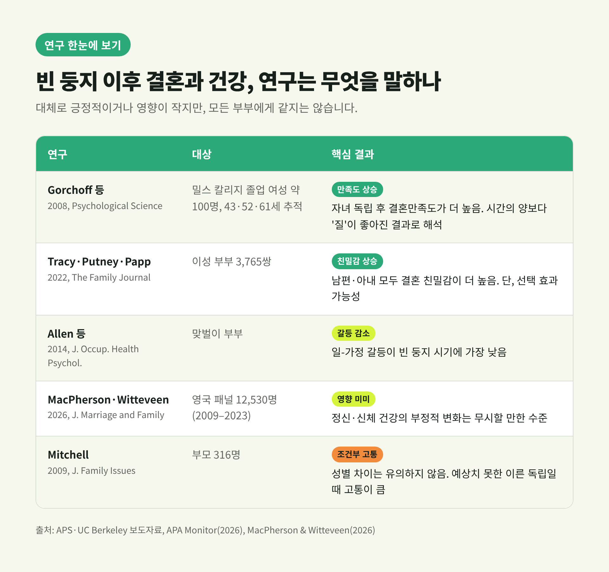
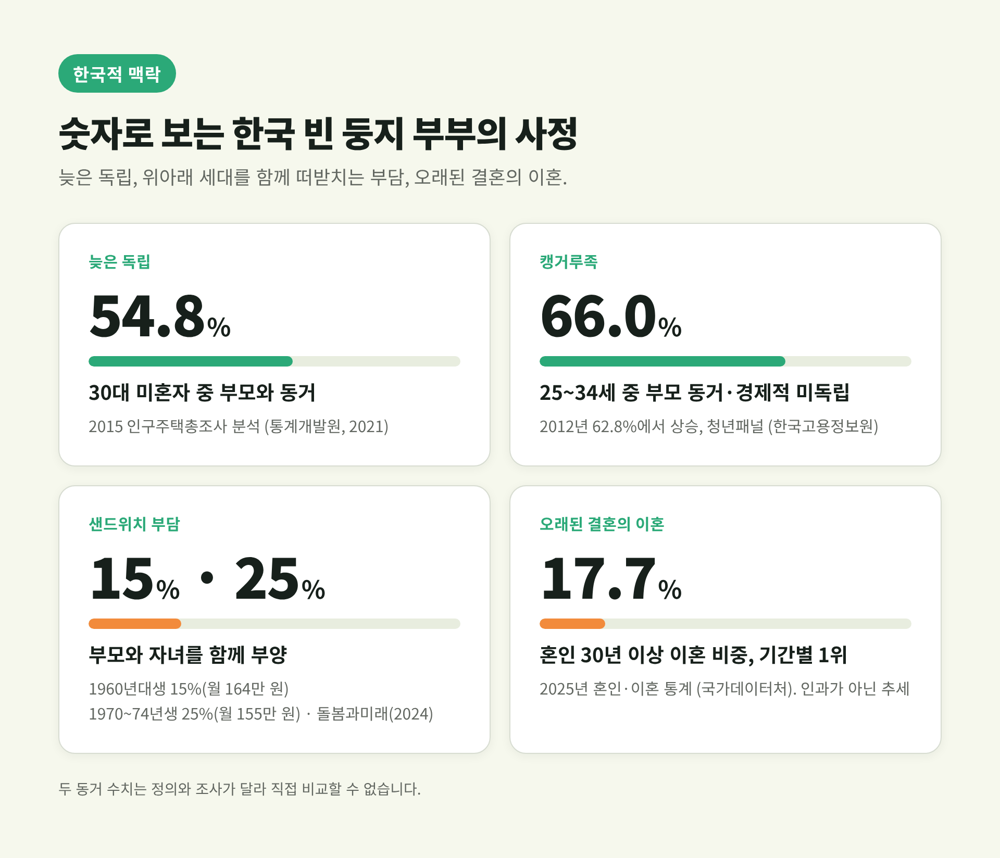
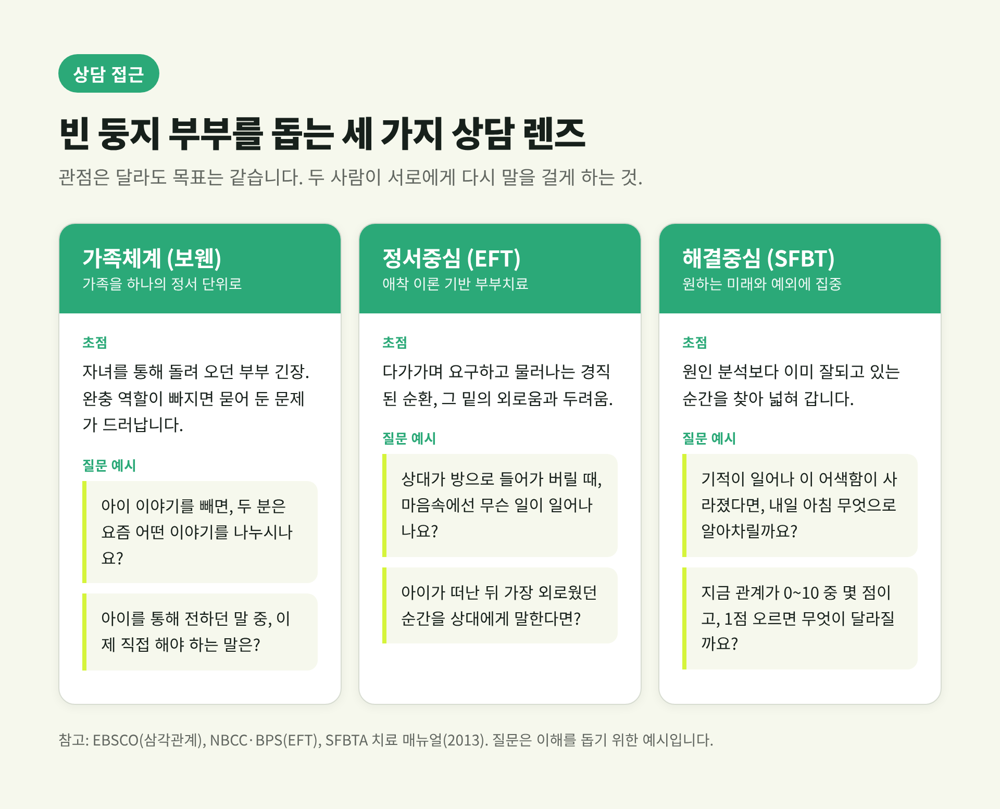
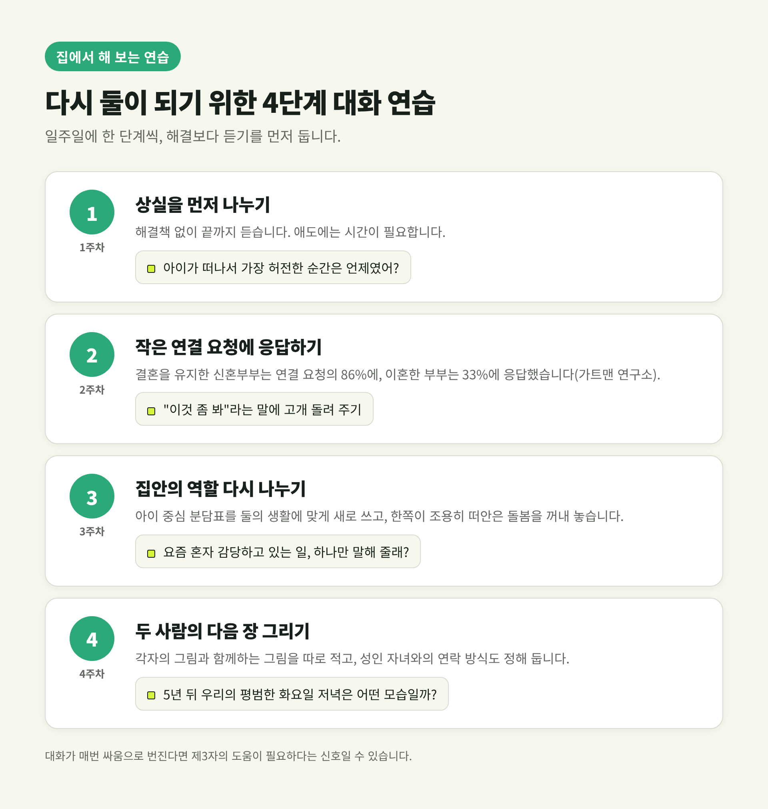

빈 둥지 부부관계, 자녀가 떠난 뒤 두 사람이 관계를 다시 세우는 법

오늘은 자녀가 독립한 뒤 부부가 마주하는 '빈 둥지 시기'를 다뤄 보려 합니다. 결론부터 말씀드리면, 이 시기는 병이 아니라 가족이 거치는 하나의 발달 단계입니다. 연구들은 결혼이 오히려 가까워지는 경우가 많다고 말하지만, 그러려면 부부가 '두 사람의 관계'를 새로 협상하는 과제를 풀어야 합니다.
이 글에서는 가족생활주기 이론, 국내외 연구, 한국 가정의 특수한 사정, 상담 현장의 질문들, 그리고 부부가 집에서 해 볼 수 있는 대화 연습까지 차례로 정리합니다.
■ '빈 둥지 증후군'은 진단명이 아닙니다
먼저 용어부터 짚겠습니다. '빈 둥지 증후군'은 널리 쓰이지만 공식 진단명이 아닙니다. 메이요 클리닉은 이를 마지막 자녀가 집을 떠날 때 부모가 겪는 슬픔과 상실감이라는 '현상'으로 설명합니다.
미국심리학회(APA) 소식지 2026년 9월호에 실린 전문가들의 시각도 비슷합니다. 한 노인심리학자는 이 시기를 "증후군이 아니라 자연스럽고, 잠재적으로 힘을 주는 발달 단계"라고 표현했습니다. 다른 학자는 "둥지는 결코 비지 않는다"고 말합니다. 부모라는 역할에서 은퇴하는 사람은 없다는 뜻입니다.
물론 상실감 자체가 가짜라는 말은 아닙니다. 허전함이 몇 주를 넘겨 이어지고 일상이 무너진다면, 그것은 '시기의 문제'가 아니라 도움이 필요한 신호입니다. 메이요 클리닉도 우울감이 느껴지면 의료진과 상의하라고 권합니다.
■ 가족생활주기로 보면 무엇이 달라지는가
가족치료 분야에서 오래 쓰여 온 카터와 맥골드릭의 가족생활주기 모델은 가족의 삶을 여섯 단계로 나눕니다. 그중 다섯 번째가 '자녀를 떠나보내고 나아가는 단계'입니다.

이 단계의 핵심 원리는 "가족 체계에서 수많은 나감과 들어옴을 받아들이기"입니다. 자녀는 나가고, 머지않아 사위나 며느리, 손주가 들어옵니다. 동시에 윗세대인 부모님은 아프거나 세상을 떠나기 시작합니다.
모델은 이 시기에 필요한 변화를 네 가지로 정리합니다.
- 부부 체계를 다시 '두 사람'의 관계로 재협상하기
- 성장한 자녀와 성인 대 성인의 관계 맺기
- 사돈과 손주를 포함하도록 관계를 다시 배치하기
- 부모 세대의 질병과 죽음에 대처하기

눈여겨볼 대목은 첫 번째 과제입니다. '다시 둘이 된다'는 것은 신혼으로 돌아간다는 뜻이 아닙니다. 20~30년 동안 '엄마·아빠'라는 공동 프로젝트를 중심으로 짜였던 일상, 대화, 역할 분담을 처음부터 다시 맞춰야 한다는 뜻에 가깝습니다.
미시간대 의료원의 건강 정보도 같은 이론을 소개하며, 이 이론이 모든 가족에 들어맞지는 않는다는 점을 분명히 밝힙니다. 틀은 지도일 뿐 정답은 아니라는 점을 기억해 두시면 좋겠습니다.
■ 연구는 무엇을 보여주는가
빈 둥지 이후 결혼은 나빠질까요, 좋아질까요. 연구 결과는 생각보다 낙관적입니다만, 단서도 함께 붙어 있습니다.

결혼만족도는 올랐습니다. UC 버클리 연구팀(Gorchoff 등, 2008)은 1958년 밀스 칼리지를 졸업한 여성 약 100명을 43세, 52세, 61세에 걸쳐 추적했습니다. 자녀가 독립한 여성은 자녀와 함께 사는 여성보다 결혼만족도가 높았습니다. 흥미로운 점은 함께 보내는 시간이 늘어서가 아니라, 그 시간의 '질'이 좋아져서였다는 해석입니다. 또 결혼만족도는 올랐지만 삶 전반의 충족감은 오르지 않았습니다. 변화가 부부관계에 특정해서 나타난 셈입니다.
친밀감도 높았습니다. 이성 부부 3,765쌍을 분석한 연구(Tracy·Putney·Papp, 2022)에서도 빈 둥지 상태의 남편과 아내 모두 더 높은 결혼 친밀감을 보고했습니다. 다만 연구자는 신중합니다. 궁합이 덜 맞는 부부는 이 시기 전에 이미 헤어졌을 수 있어, 순효과를 단정하기 어렵다는 것입니다.
건강 악화는 거의 없었습니다. 영국 가구 패널 12,530명을 2009~2023년 추적한 2026년 연구(MacPherson·Witteveen)는 빈 둥지 전환 이후 정신·신체 건강의 부정적 변화가 "무시할 만한 수준"이었다고 보고했습니다. 저자들은 보편적인 '증후군'이 존재하는지 자체에 의문을 던집니다.
그러나 모두에게 같지는 않습니다. 부모 316명을 조사한 연구(Mitchell, 2009)에서는 어머니가 아버지보다 정서적 어려움을 유의하게 더 겪지 않았습니다. 대신 자녀가 예상보다 일찍, 준비 없이 떠났을 때 고통이 컸습니다. 2024년 『커뮤니케이션스 사이콜로지』 리뷰(Hartanto 등)는 이 시기 정서 경험을 한마디로 "혼재되어 있다"고 정리합니다. 양육 부담이 풀리는 해방감과, 핵심 정체성을 잃는 상실감이 동시에 작동한다는 것입니다.
맞벌이 부부의 일과 가정 사이 갈등이 빈 둥지 시기에 가장 낮다는 연구(Allen 등, 2014)도 있습니다. 여유가 생긴다는 것은 분명한 기회입니다. 그 여유를 무엇으로 채우느냐가 남은 숙제입니다.
■ 상실감, 정체성, 그리고 역할의 공백
자녀가 떠난 집에서 가장 먼저 비는 것은 방이 아니라 '역할'입니다. 도시락을 싸던 아침, 학원 시간에 맞춰 짜던 저녁이 한꺼번에 사라집니다.
연구자들은 이를 '역할 상실'과 '역할 부담 해소'라는 두 힘의 줄다리기로 설명합니다. 어느 쪽이 이기는지는 사회적 관계와 활동에 달려 있다고 합니다. 빈 둥지 연구를 검토해 온 부샤드(Bouchard)가 양육에 크게 투자하느라 우정이나 여가를 내려놓았던 부모일수록 적응이 어렵다고 지적한 것도 같은 방향입니다.
국내 연구도 참고할 만합니다. 빈 둥지 시기를 겪은 중년 여성 10명을 인터뷰한 김정주(2018)의 연구는 경험을 네 유형으로 나눴습니다. 스스로를 새로 찾아 나서는 '자아탐색형', 주어진 역할에 맞춰 가는 '역할순응형', 관계에 무게를 두는 '관계중심형', 변화의 의지를 잃은 '변화상실형'입니다. 같은 빈 둥지라도 그 안에서 어떤 방향을 택하느냐에 따라 전혀 다른 시기가 된다는 뜻입니다.
부부 사이에서는 이 차이가 엇박자로 나타나기 쉽습니다. 한 사람은 새 출발에 들떠 있는데, 다른 한 사람은 아직 상실을 애도하는 중일 수 있습니다. 그 속도 차이를 '상대가 나를 이해하지 못한다'로 읽기 시작하면 갈등이 됩니다.
■ 한국 부부의 빈 둥지는 조금 더 복잡합니다
한국의 빈 둥지는 '어느 날 텅 비는' 모습이 아닌 경우가 많습니다. 예전에는 대학 진학이나 결혼이 곧 독립이었습니다. 지금은 독립의 시점이 늦고, 들어왔다 나갔다를 반복합니다.

늦은 독립. 통계개발원이 2015년 인구주택총조사를 분석한 결과, 30대 미혼자의 54.8%가 부모와 함께 살았습니다. 한국고용정보원 분석에서는 부모와 살거나 경제적으로 독립하지 못한 25~34세 '캥거루족' 비중이 2012년 62.8%에서 2020년 66.0%로 늘었습니다. 두 수치는 정의가 달라 직접 비교할 수는 없습니다. 그래도 방향은 같습니다. 둥지가 완전히 비기 전에 부부의 시간이 먼저 흘러가고 있다는 점입니다.
샌드위치 부담. 재단법인 돌봄과미래 조사(2024)에 따르면 1960년대생의 15%는 부모와 자녀를 동시에 부양하며 월평균 164만 원을 쓰고 있었습니다. 1970~74년생에서는 이 비율이 25%였습니다. 카터와 맥골드릭이 말한 '부모 세대의 질병과 죽음에 대처하기'가 한국에서는 경제적 부담과 돌봄 노동의 형태로 한꺼번에 찾아오는 셈입니다.
자녀 중심으로 짜인 가족. 아시아권 빈 둥지 연구를 검토한 2024년 리뷰는 효도 규범과 세대 동거 기대가 이 시기 경험을 크게 좌우한다고 봅니다. 여성이 시가 돌봄 같은 무급 노동을 더 많이 떠안는 구조도 함께 지적합니다. 자녀를 축으로 돌아가던 집에서 그 축이 빠지면, 부부는 '우리 둘이 무슨 이야기를 해야 하지'라는 낯선 질문 앞에 섭니다.
오래된 결혼의 이혼. 국가데이터처의 2025년 혼인·이혼 통계에서 혼인 지속기간별 이혼 비중은 30년 이상이 17.7%로 가장 높았습니다. 2024년에는 20년 이상 함께한 부부의 이혼이 약 3만 3천 건이었습니다. 다만 이 숫자가 '빈 둥지 때문에 이혼한다'는 인과를 보여주지는 않습니다. 오래 미뤄 둔 질문이 이 시기에 표면으로 올라온다는 정도로 읽는 것이 정확합니다.
■ 상담실에서는 어떤 질문을 건넬까
부부상담 현장은 이 시기를 다루는 여러 렌즈를 갖고 있습니다. 여기서는 세 가지 접근과 실제로 쓰일 법한 질문을 소개합니다.

가족체계 관점 — 삼각형에서 한 꼭짓점이 빠질 때. 보웬의 가족체계 이론은 가족을 하나의 정서 단위로 봅니다. 부부가 갈등을 직접 다루지 않고 자녀를 통해 돌려 말할 때, 자녀는 "불안을 담는 그릇"이 되어 한동안 부부의 긴장을 희석한다고 설명합니다. 자녀가 떠나면 이 완충이 사라집니다. 묻어 두었던 문제가 다시 보이는 이유입니다. - "아이 이야기를 빼면, 두 분은 요즘 어떤 이야기를 나누시나요?" - "예전에 아이를 통해 전하던 말 중에, 이제 직접 해야 하는 말은 무엇일까요?"
정서중심 부부치료(EFT) — 싸움의 내용보다 순환을 본다. 그린버그와 존슨이 1988년에 소개한 이 접근은 애착 이론에 뿌리를 둡니다. 한 사람이 다가가며 요구하고 다른 사람이 물러나는 식의 경직된 순환을 찾아, 그 밑의 외로움과 두려움을 말할 수 있게 돕습니다. 메타분석에서는 10~12회기 만에 70~73%의 부부가 관계 고통에서 회복하고, 90%가 유의하게 나아졌다고 보고됩니다. - "상대가 방으로 들어가 버릴 때, 그 순간 마음속에서는 무슨 일이 일어나나요?" - "아이가 떠난 뒤 가장 외로웠던 순간을 상대에게 말한다면 어떻게 말씀하시겠어요?"
해결중심 단기치료 — 문제보다 이미 잘되고 있는 것. 드 셰이저와 인수 김 버그가 밀워키에서 발전시킨 이 접근은 원인 분석보다 원하는 미래와 '예외'에 집중합니다. - 기적 질문: "오늘 밤 기적이 일어나 이 어색함이 사라졌다면, 내일 아침 무엇을 보고 알아차리실까요?" - 척도 질문: "0에서 10 사이라면 지금 두 분의 관계는 몇 점이고, 1점 올라가면 무엇이 달라져 있을까요?" - 예외 질문: "최근 둘이서 대화가 조금 더 쉬웠던 날은 언제였고, 그날은 무엇이 달랐나요?"
세 접근은 서로를 배척하지 않습니다. 실제 상담에서는 부부의 상태에 따라 섞어 쓰는 경우가 많습니다.
■ 가상 사례로 보는 재조정의 과정
이해를 돕기 위해 여러 상담 장면을 일반화한 가상 사례를 소개합니다. 실존 인물이 아니며, 특정 사례를 옮긴 것도 아닙니다.
50대 중반의 A씨 부부는 막내가 지방 대학 기숙사로 들어간 뒤 저녁 식탁이 조용해졌습니다. 아내는 "이제 우리 둘이 여행도 다니자"고 했지만, 남편은 퇴근 후 텔레비전 앞에만 있었습니다. 아내는 무시당한다고 느껴 말이 날카로워졌고, 남편은 더 깊이 물러났습니다.
상담에서 드러난 것은 의외의 사정이었습니다. 남편은 최근 홀로 계신 어머니의 병원 동행을 도맡으며 지쳐 있었고, 그 이야기를 꺼내면 아내에게 짐이 될까 봐 말하지 않았습니다. 아내는 아내대로 아이 뒷바라지가 끝난 뒤 '나는 이제 뭘 해야 하지'라는 공허함을 여행 계획으로 메우려 하고 있었습니다.
전환점은 거창하지 않았습니다. "요즘 가장 버거운 것 하나"를 서로 말해 보는 시간을 일주일에 한 번 갖기로 한 것입니다. 여행은 그다음이었습니다. 두 사람은 같은 빈자리를 서로 다른 방식으로 견디고 있었을 뿐입니다.
■ 부부가 함께 해 볼 수 있는 대화 연습
상담실에 가기 전, 집에서 시작할 수 있는 연습을 네 단계로 정리했습니다. 한 번에 다 하기보다 일주일에 한 단계씩 해 보시길 권합니다.

1단계 — 상실을 먼저 나눕니다. "아이가 떠나서 가장 허전한 순간은 언제였어?" 해결책을 내놓지 말고 끝까지 듣기만 합니다. 애도에는 시간이 필요하다는 상담자들의 조언과 맞닿아 있습니다.
2단계 — 작은 연결 요청에 응답합니다. 가트맨 연구소는 관심이나 애정을 구하는 상대의 작은 시도를 '연결 요청(bid)'이라 부릅니다. 신혼부부를 6년 뒤 다시 살펴보니, 결혼을 유지한 부부는 이런 요청에 86%를 응답했고 이혼한 부부는 33%에 그쳤다고 합니다. "이 기사 좀 봐" 같은 말에 고개를 돌려 주는 것부터 시작하면 됩니다.
3단계 — 집안의 역할을 다시 나눕니다. 아이 중심으로 짜였던 분담표를 둘의 생활에 맞게 새로 씁니다. 부모님 돌봄처럼 한쪽이 조용히 떠안고 있는 일이 있는지도 이때 꺼내 놓습니다.
4단계 — 두 사람의 다음 장을 그립니다. "5년 뒤 우리 둘의 평범한 화요일 저녁은 어떤 모습이면 좋겠어?" 각자의 그림과 함께하는 그림을 따로 적어 봅니다. 각자의 정체성을 세우는 일과 둘의 관계를 세우는 일은 함께 가야 합니다. 성인 자녀와는 연락 빈도와 방법을 미리 정해 두는 것도 도움이 됩니다. 정기적으로 자녀와 연락하는 부모가 삶에 더 만족한다는 연구(Bouchard 등, 2016)도 있습니다.
이 연습이 모든 부부에게 효과가 있지는 않습니다. 대화를 시도할 때마다 싸움으로 번진다면, 그것은 노력이 부족해서가 아니라 제3자의 도움이 필요한 단계라는 신호일 수 있습니다.
■ 혼자 감당하기 어렵다면
허전함이 오래가거나, 대화가 매번 같은 싸움으로 끝나거나, 이혼을 진지하게 고민하고 있다면 전문 상담을 받아 보시길 권합니다. 상담은 관계가 끝났다는 신호가 아니라, 관계를 다시 짜기 위한 도구입니다.
- 가족센터 1577-9337 — 전국 가족센터에서 생애주기별 가족 갈등에 대한 개별·집단 상담을 제공합니다. (familynet.or.kr)
- 109 (국번 없이, 24시간) — 자살예방 상담전화 통합 번호입니다. 마음이 무너질 만큼 힘들 때 언제든 걸 수 있습니다.
- 1577-0199 정신건강 위기상담 전화 — 지역 정신건강 위기상담 창구입니다. 2024년부터 109로 통합 안내되고 있어, 연결이 어려우면 109를 이용하시면 됩니다.
이 글은 일반적인 정보를 제공하기 위한 것이며, 개인의 상황에 대한 진단이나 상담을 대신하지 않습니다.
정리하면 이렇습니다. 빈 둥지는 끝이 아니라 부부가 처음으로 '부모'라는 이름을 잠시 내려놓고 서로를 다시 마주하는 자리입니다. 연구는 그 자리가 생각보다 따뜻할 수 있다고 말하지만, 저절로 따뜻해지지는 않습니다.
"아이가 떠난 자리를 채우는 것은 새 계획이 아니라, 두 사람의 대화입니다."
다시 둘이 되는 일이 두렵냐고 물으신다면, 처음 둘이었던 그때도 우리는 서툴렀다고 답하고 싶습니다.
참고자료
- Carter & McGoldrick, The Family Life Cycle (Table 1.1)
- Michigan Medicine, Family Life Cycle Theory
- Mayo Clinic News Network, How you can enjoy the empty nest
- APA Monitor on Psychology (2026-09), Empty nest parents
- APS, Is Empty Nest Best? Changes in Marital Satisfaction in Late Middle Age (2008)
- UC Berkeley 보도자료 (2008-12-03)
- MacPherson & Witteveen (2026), The Empty Nest Syndrome in the United Kingdom, Journal of Marriage and Family
- Hartanto et al. (2024), Communications Psychology
- Psychology Today (2024), Tracy·Putney·Papp (2022) 연구 소개
- Discover Magazine, Are There Any Benefits to Being an Empty Nester?
- 김정주(2018), 중년여성의 빈둥지시기 경험 탐색과 평생교육학적 제안, 한국교육학연구
- EBSCO Research Starters, Triangulation (psychology)
- NBCC, Emotionally Focused Therapy Offers Hope to Couples
- BPS The Psychologist, The evolution of couple therapy
- SFBTA, Solution Focused Brief Therapy Treatment Manual (2013)
- The Gottman Institute, Turn Toward Instead of Away
- 뉴시스(2021-04-02), 결혼 안 한 30대 55% 부모 동거
- 한경비즈니스(2024), 2030 캥거루족의 현황 및 특징
- SBS Biz(2024-06-03), 60년대생 이중 부양
- 뉴시스(2024-11-27), 1970~74년생 이중 돌봄
- 뉴시스(2025-03-20), 2024년 이혼 통계
- SBS Biz(2026-03-20), 2025년 혼인·이혼 통계
- 이투데이(2026-03-20), 2025년 혼인·이혼 통계
- 여성가족부, 가족센터 안내
- 대한민국 정책브리핑, 가족센터 안내(2024-06-14)
- 대한민국 정책브리핑, 자살예방 상담전화 109
- 서울시 복지 누리집, 정신건강 위기상담 안내